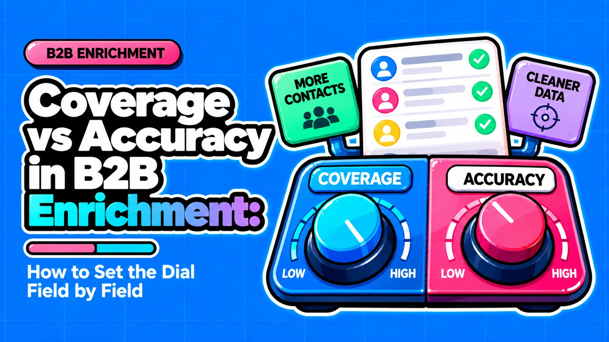

Coverage vs Accuracy in B2B Enrichment: How to Set the Dial Field by Field

Direct answer: Optimize for accuracy where a wrong value is costly and hard to undo: work email for cold outreach, mobile numbers and CRM overwrites. Optimize for coverage where an approximate value is cheap: firmographics, routing, TAM sizing and ABM account lists. Single providers force a trade-off and vendor accuracy numbers are not comparable, so set the gate per field and use a waterfall with validation to fill the gaps.
- Decide per field: a wrong work email, a wrong mobile and a wrong industry band carry different costs, so one vendor-level setting fits none of them well.
- No provider wins both: in Clay's 2025 benchmark, the most accurate work-email provider reached only 52.87% coverage.
- Every tool exposes a dial: Clay has a validation requirement and confidence threshold, Apollo has email-status filters, and ZoomInfo has an accuracy score filter.
- Verified means point-in-time: a verification status cannot confirm that a person still works at the company or that the inbox is read.
- Test on your own sample: published accuracy figures conflict, so measure bounce and connect rate by field and segment on your ICP.
Questions this article answers
- What do coverage, accuracy, match rate and usable coverage actually measure?
- Why does a single provider force a coverage vs accuracy trade-off?
- How do you decide between coverage and accuracy for each field?
- Why does "verified" not mean "correct today"?
- How do you set the coverage and accuracy dial in Clay, Apollo and ZoomInfo?
- How do you measure real accuracy on your ICP and route the unverifiable middle?
- What should you do first?
- Plus 4 FAQs answered below
What do coverage, accuracy, match rate and usable coverage actually measure?
Coverage is the share of records that get a value, accuracy is the share of returned values that are correct, and usable coverage is what survives both. Vendors do not use these terms the same way, and conflating them produces false confidence.
| Term | What it measures | Common misreading |
|---|---|---|
| Coverage (find rate) | Share of records where the tool returns any value | Treated as quality, though a returned value can be wrong |
| Accuracy | Share of returned values that are correct | Assumed to be one standard; vendors define it differently |
| Match rate | Share of records the provider's database returned | Assumed to equal reach |
| Connect rate | Share of outreach that reaches the right person | Ignored in favor of match rate |
| Usable coverage | Share of your list ending with a value you would send to | Mistaken for an industry standard; it is our interpretation |
Clay's email-verifier tests define quality as the accuracy of the valid/invalid verdict and coverage as the share of addresses where the tool returns a confident verdict. That is not the same as whether a found email is correct. Apollo's own pages cite above 90%, 91% and 97% for verified emails on different pages, alongside an 84% match rate. Figures like these cannot be ranked against each other.
Match rate and connect rate also diverge. A high match rate can coexist with a low connect rate, a framing published by Swordfish AI. Here is a hypothetical work-email field showing how the metrics separate:
- Coverage is high: the provider returns an email for nearly every record.
- Accuracy is moderate: a meaningful share of those emails are wrong or stale.
- Usable coverage is low: after removing wrong, stale and unverifiable addresses, few records remain that you would send to.
Why does a single provider force a coverage vs accuracy trade-off?
In Clay's 2025 benchmark, no single work-email provider won on both quality and coverage. Tightening accuracy on one source costs reach, so the gate setting is always a tradeoff until a waterfall layers providers.
A stricter matching rule returns fewer values, which is our explanation for the pattern, not something Clay's data proves. What the data shows is the pattern itself: Hunter returns the most accurate values but covers about half the list, while FullEnrich covers more than 83% at lower quality and a higher credit cost per lookup. Region and segment also move the numbers, which is why Clay publishes separate regional benchmarks.
| Provider | Quality | Coverage | Credits per lookup |
|---|---|---|---|
| Hunter | 97.15% | 52.87% | 0.4 |
| Icypeas | 93.83% | 51.90% | 0.2 |
| Dropcontact | 91.81% | 75.45% | 1 |
| FullEnrich | 87.98% | 83.17% | 1.5 |
Source: Clay's 2025 work-email test, run against ground-truth data by an interested party. Time-sensitive; re-check before relying on it.
Clay says the best individual work-email providers cover roughly 52-90% depending on provider and market, and that a three-provider waterfall reaches 90-95%. Its mechanism is chaining providers cheapest-first, so each record exits at the most accurate level that can answer it (Clay waterfall guide). Our read: the mechanism is sound, but the 90-95% figure is a vendor claim from a company that sells waterfalls. Evaluate the waterfall on your own list.
How do you decide between coverage and accuracy for each field?
Compare what a wrong value costs with what a missing value costs: accuracy wins for email, mobile and CRM overwrites, coverage wins for firmographics, routing, TAM sizing and ABM. The test is asymmetric by field.
A wrong work email sends a bounce or complaint through a sending domain shared by every rep. A wrong mobile number burns dialer time. A wrong industry band misroutes one account. A missing value usually costs only reach, and reach can often be recovered through another channel or provider. The postures below are our recommendations, not sourced standards.
| Field or use case | Cost of wrong value | Cost of missing value | Posture |
|---|---|---|---|
| Work email, cold outreach | Bounces and complaints on shared domain | No email reach | Accuracy first, strict gate |
| Mobile number | Wasted dialer time | Fall back to email or LinkedIn | Accuracy first, strict gate |
| CRM overwrite | Replaces a good value with a bad one | Old value stays | Accuracy first, overwrite only above threshold |
| Job title | Wrong persona and message | Persona unknown | Balanced, re-verify before send |
| Industry, employee band | Routing or segment error on one account | Account unrouted | Coverage first, loose gate |
| TAM sizing, ABM lists | Small errors average out | Account missing from list | Coverage first, loose gate |
Over-optimizing coverage pushes pattern-guessed emails and catch-all sends into campaigns, which raises bounces and complaints. Three measures matter and they differ: Google requires Gmail bulk senders (5,000+ messages a day) to keep the user-reported spam rate below 0.3%, with 0.1% recommended. That is a complaint rate, not a bounce limit. Bounce thresholds such as 2% are industry practice, cited by Instantly. Catch-all domains accept mail for any address, so bounce rate alone can hide a reachability problem. At 500,000 addresses, 99% accuracy means 5,000 errors and 99.9% means 500.
Over-optimizing accuracy leaves segments unreachable. In Clay's test the most accurate provider covered 52.87% of the list, so a gate tuned only for precision misses pipeline and adds validation spend.
Why does "verified" not mean "correct today"?
Verification is a point-in-time check: it cannot confirm that a person still works there or reads the inbox, and on catch-all domains it cannot confirm the mailbox exists.
A verifier checks an address at one moment. On normal non-catch-all domains the best verifiers reach near-perfect verdict accuracy in Clay's own tests, so the weak point is rarely the check itself. It is what the check cannot see. Catch-all domains accept mail for any address, so SMTP-style checks return "risky/unknown" or a proprietary score (Instantly). Vendors therefore recommend a dedicated real-time verification step before cold sends.
| Source | Figure | Population or denominator | Caveat |
|---|---|---|---|
| HubSpot/MarketingSherpa simulation | About 22.5% per year | B2B contact data (2.1% per month) | Reported secondhand by Datamagnet |
| ZeroBounce | 23% per year | Typical email list | Down from 28% in 2024; vendor figure |
| Lusha | 12.25% per year | 148,000 records, US sales leaders | Narrow population; vendor figure |
| "Gartner" figure | 70.3% | Unknown | Datamagnet questions the Gartner attribution; do not rely on it |
Sources: Datamagnet, Lusha.
The spread comes from denominators, populations and fields. Lusha argues the commonly quoted figure of about 30% is closer to a two-year rate (25.67% over 24 months in its data) and that whole-database and working-segment denominators give different answers. Our read: estimates likely understate decay, because changes nobody detected are not counted. We do not assume a universal decay rate. We recommend a re-verify step before every send and a re-verify window set per field.
How do you set the coverage and accuracy dial in Clay, Apollo and ZoomInfo?
Clay uses a validation requirement and confidence threshold, Apollo uses email-status filters including a catch-all choice, and ZoomInfo uses a contact accuracy score filter. Start with each tool's native control, then add a waterfall for the records it cannot fill.
That sequence is our recommendation, not a sourced fact. The cost metric that matters is cost per usable record, our interpretation: total enrichment and validation spend divided by records that end send-ready. Tightening a gate raises spend per lookup, because Clay validation checks consume Data Credits and an Action whether the result is valid or invalid. It can still lower cost per usable record if it removes wasted sends.
| Tool and dial | Loosening | Tightening and cost | Caveat |
|---|---|---|---|
| Clay: validation toggle and confidence threshold | Chain stops early on weaker data | More records fall to the next provider; validation consumes credits | Clay recommends strict settings for cold outreach |
| Apollo: email-status filter | Include Catch-all and Unverified | Exclude Catch-all; Apollo acknowledges this has a coverage cost | Accuracy figures are self-reported |
| ZoomInfo: contact accuracy score filter | Lower cutoff shows more records | Higher cutoff shows fewer, more accurate records | Source is an engineering blog post; verify the current model |
A hypothetical strict-gate configuration for cold-email work addresses in Clay:
- Order providers cheapest first. Each record then exits at the lowest-cost provider that can answer it (Clay).
- Turn on validation. Enable "Require validation success?" so an email is accepted only if the validator confirms it; the waterfall stops at the first valid result (Clay Docs).
- Set a strict threshold. A strict threshold sends more records to the next provider. Clay recommends it for cold outreach because a wrong email is worse than a missing one.
- Loosen non-email fields. Use looser thresholds for firmographics, where a wrong value is cheap (our recommendation).
- Track spend per send-ready record. This shows whether tighter gates paid for themselves.
How do you measure real accuracy on your ICP and route the unverifiable middle?
Test a sample of your real ICP, compare match rate with connect rate by segment, then route catch-all and low-confidence records instead of discarding them or sending blindly.
Published numbers conflict, and the available Apollo vs ZoomInfo comparisons are vendor-run or competitor-run on small samples. Your own sample is the only figure that applies to your segments. Compare match rate against connect rate to spot database size inflating coverage without improving reach.
- Draw the sample. Pull records from your real ICP, sized so the smallest segment you care about is represented.
- Run identical records. Send the same records through every source so differences come from the source.
- Log outcomes by field. Track bounce rate and connect rate per field and segment, not only per vendor.
- Compare match to connect. A wide gap means coverage is not turning into reach.
- Write thresholds down. Set the gate per field from the results.
Treat catch-all and low-confidence records as a routing decision with four outcomes (our recommendation):
- Verified: standard cadence by email.
- Catch-all or low-confidence: lower-volume track, or a catch-all-specific verifier before sending.
- Unreachable by email: phone or LinkedIn.
- Ambiguous (such as "Update required"): hold for human review.
Do not discard all catch-alls. Apollo lets users filter them in or out and acknowledges that excluding them has a coverage cost. Store source, confidence and verified date per field in the CRM so thresholds and overwrite rules can be enforced downstream.
What should you do first?
Classify each field by the cost of a wrong value, set a gate per field, and verify the setting on your own data rather than on vendor percentages.
Here is how the statements in this article break down. Sourced facts: Google's 0.3% complaint-rate threshold with its 0.1% target, Clay's documented validation behavior, and Apollo's documented statuses. Vendor claims: Clay's benchmark and waterfall coverage, Apollo's accuracy figures, and every decay estimate. Recommendations: the field postures, the native-filters-first architecture, cost per usable record, usable coverage and the routing model. Recommendations should become policy only after your sample supports them.
☐ Classify every enrichment field by cost of a wrong value versus cost of a missing one.
☐ Set a gate per field: Clay validation and threshold, Apollo status filter, or ZoomInfo accuracy score.
☐ Run a sampled test on your ICP and store source, confidence and verified date in CRM fields.
Frequently asked questions
Is Google's 0.3% threshold a bounce-rate limit?
No. Google's 0.3% threshold applies to the user-reported spam rate in Postmaster Tools, with 0.1% as the recommended target. Bounce thresholds such as 2% are industry practice cited by third-party vendors like Instantly, not a Google-published rule in the sources we reviewed.
Does a waterfall remove the coverage/accuracy trade-off?
Partly. A waterfall can raise coverage while keeping a validation gate, but it adds provider and validation cost, and order and thresholds must be configured. Most of the evidence that it removes the trade-off comes from Clay, which sells waterfalls. It is not independent evidence.
Which Apollo accuracy figure should I trust?
None of them as a guarantee. Apollo cites above 90%, 91% and 97% on different pages, and all are self-reported. Run a sampled test on your own ICP and measure bounce rate and connect rate by segment.
Should I exclude catch-all emails from cold outreach?
Neither exclude them outright nor send to them blindly. Catch-all domains accept mail for any address, so verifiers cannot confirm the mailbox, and Apollo acknowledges that excluding them has a coverage cost. We recommend a lower-volume track, a catch-all-specific verifier or another channel.
Sources
- Clay: The Complete Guide to Waterfall Enrichment
- Clay: Best work email provider by region 2025 (data tests)
- Clay: How to Find Work Email Addresses at Scale
- Clay Docs: Work Email waterfall
- Clay FAQ: Do unsuccessful searches consume Data Credits? What about Actions?
- Clay: The Complete Guide to Email Deliverability
- Google: Email sender guidelines (Gmail Help)
- Apollo Knowledge Base: Email Status Overview
- Apollo: Which Tool Offers the Best Email Verification in 2026?
- ZoomInfo Engineering: Using Machine Learning to Determine Contact Accuracy Scores
- Lusha: B2B Data Decay
- Datamagnet: How Fast Does B2B Contact Data Decay in 2026?
- Instantly: 2026 Email Verification Benchmark
- Swordfish AI: How Accurate Is ZoomInfo? Match Rate vs Connect Rate
Want to map enrichment fields, thresholds and routing into your CRM architecture before your next campaign?
Contact →